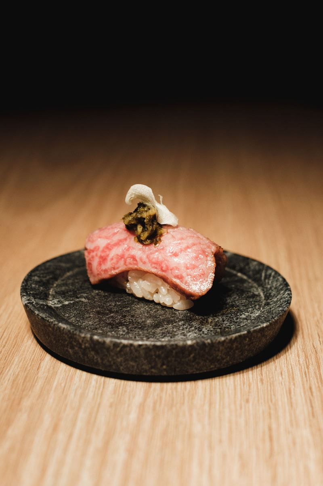
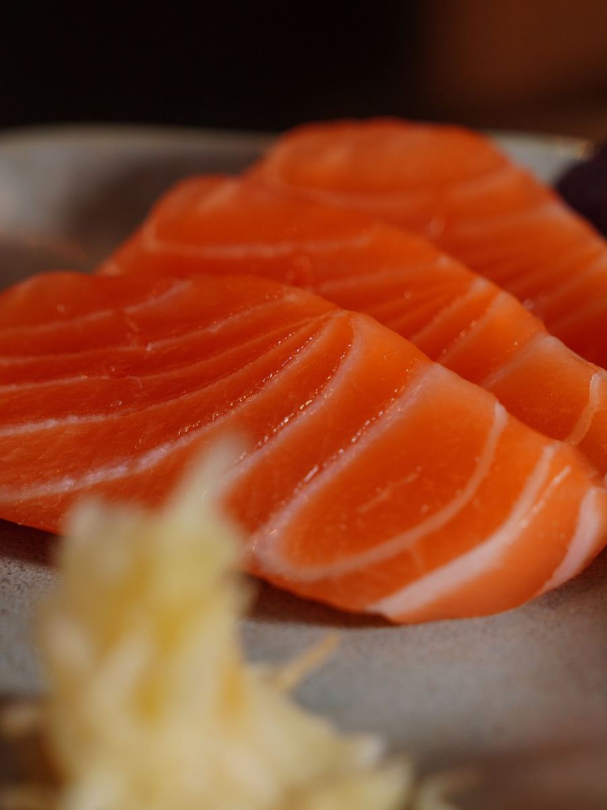
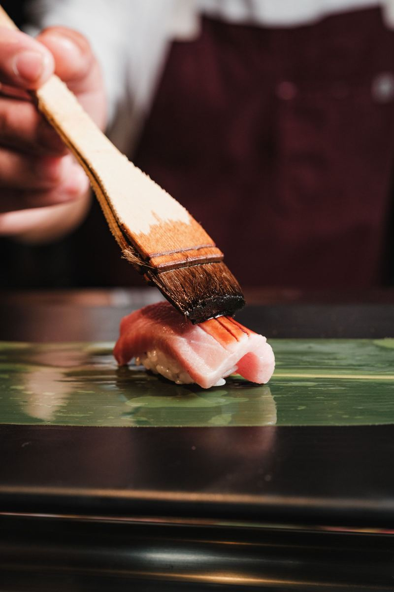
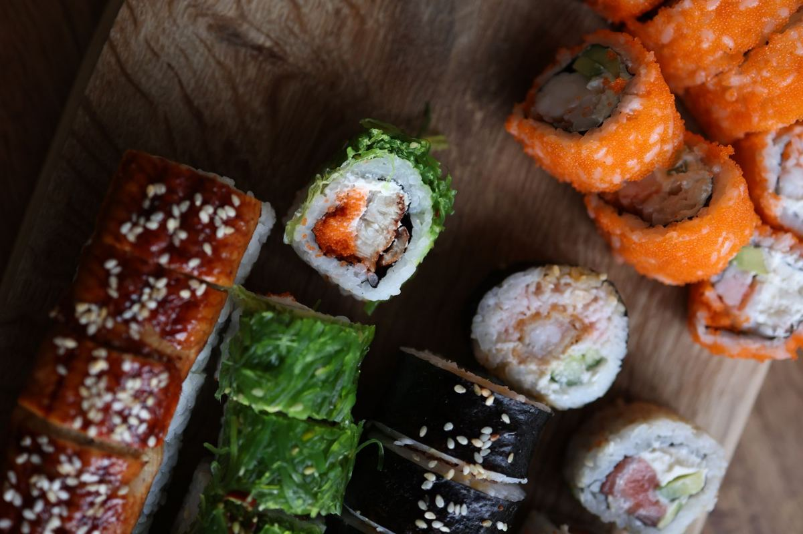
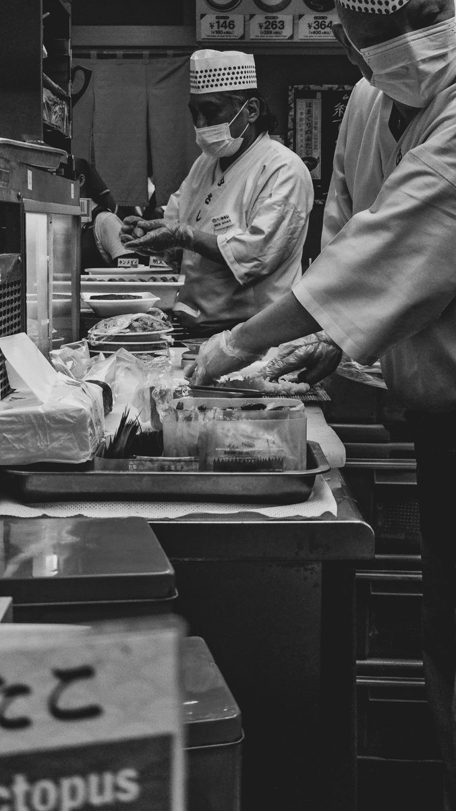

La carta de sal, & lo que el mar recuerda.
Diez asientos frente a la barra, un itamae y el pescado que llegó a la mañana. Nada más. La carta cambia con la estación y se escribe como una revista: se lee despacio y se come con las manos.
La carta, en índice.



El arroz no es acompañamiento. Es el plato.
Fotografiado en la barra, una noche de martes

Kenji llega a las nueve de la mañana y lo primero que hace no es mirar el pescado: lava el arroz. Siete veces, hasta que el agua sale clara. Después lo deja descansar, lo cocina en una olla de hierro que trajo su padre de Okinawa y lo condimenta con un vinagre que prepara una vez por semana, con azúcar mascabo y sal de Salinas Grandes.
«En el sushi, el pescado se lleva los aplausos, pero el que sostiene todo es el arroz», dice mientras lo abanica para que se enfríe hasta la temperatura justa: la del cuerpo. Un nigiri frío es un nigiri triste.
“Un buen nigiri se desarma en la boca, no en los dedos.”— Kenji Arakaki, itamae
A las seis de la mañana entra el pescado. Atún rojo cuando hay temporada, salmón rosado del sur, pesca blanca de Mar del Plata y langostinos de Rawson. Lo que no está bien, no entra; por eso hay días en que la pizarra dice «agotado» y no pedimos disculpas.
La sal le da nombre a todo esto. Shio quiere decir sal en japonés, y es lo único que Kenji le pone a algunas piezas: una pizca sobre la grasa del toro, un poco de limón y nada de soja. La idea es que el mar se sienta antes que cualquier salsa.
Por eso la carta es corta y cambia. Por eso hay solo diez asientos. Y por eso, si venís a la barra, te vamos a pedir que dejes el celular un rato: lo que pasa entre la mano del itamae y la tuya dura tres segundos.
Cómo se come un nigiri
Cinco reglas que Kenji explica la primera vez que te sentás. Después, hacé lo que quieras.
- Con la mano está bien. Con palitos también. Pero de un bocado.
- Si lleva soja, mojá el pescado, nunca el arroz: se desarma.
- El wasabi ya está adentro. No hace falta mezclar con la soja.
- El jengibre limpia la boca entre pieza y pieza; no es para acompañar.
- Comé apenas te lo sirven. El arroz está tibio por tres minutos.
“Lo dejo en tus manos.”
Lo que entró hoy.
Actualizado cada mañana a las 6. Lo que se termina, se termina: la pizarra no miente.
Índice de ingredientes.
Reservá tu asiento.
La barra tiene diez lugares y dos turnos por noche. Las mesas del salón son para la carta. Te llega la reserva armada por WhatsApp y te confirmamos en el día.